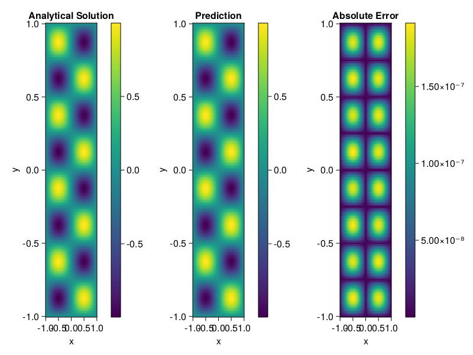

Helmholtz equation
Let us consider the Helmholtz equation in two space dimensions
\[\begin{aligned} &\Delta u(x, y)+k^{2} u(x, y)=q(x, y), \quad(x, y) \in \Omega:=(-1,1)^2 \\ &u(x, y)=0, \quad(x, y) \in \partial \Omega \end{aligned}\]
where
\[q(x, y)=-\left(a_{1} \pi\right)^{2} \sin \left(a_{1} \pi x\right) \sin \left(a_{2} \pi y\right)-\left(a_{2} \pi\right)^{2} \sin \left(a_{1} \pi x\right) \sin \left(a_{2} \pi y\right)+k^{2} \sin \left(a_{1} \pi x\right) \sin \left(a_{2} \pi y\right).\]
The excat solution is $u(x,y)=\sin{a_1\pi x}\sin{a_2\pi y}$. We chose $k=1, a_1 = 1$ and $a_2 = 4$.
using ModelingToolkit, IntervalSets, Sophon, Lux
using Optimization, OptimizationOptimJL
@parameters x,y
@variables u(..)
Dxx = Differential(x)^2
Dyy = Differential(y)^2
a1 = 1
a2 = 4
k = 1
q(x,y) = -(a1*π)^2 * sin(a1*π*x) * sin(a2*π*y) - (a2*π)^2 * sin(a1*π*x) * sin(a2*π*y) + k^2 * sin(a1*π*x) * sin(a2*π*y)
eq = Dxx(u(x,y)) + Dyy(u(x,y)) + k^2 * u(x,y) ~ q(x,y)
domains = [x ∈ Interval(-1,1), y ∈ Interval(-1,1)]
bcs = [u(-1,y) ~ 0, u(1,y) ~ 0, u(x, -1) ~ 0, u(x, 1) ~ 0]
@named helmholtz = PDESystem(eq, bcs, domains, [x,y], [u(x,y)])\[ \begin{align} \frac{\mathrm{d}}{\mathrm{d}y} \frac{\mathrm{d}}{\mathrm{d}y} u\left( x, y \right) + \frac{\mathrm{d}}{\mathrm{d}x} \frac{\mathrm{d}}{\mathrm{d}x} u\left( x, y \right) + u\left( x, y \right) =& - 166.78 \sin\left( 3.1416 x \right) \sin\left( 12.566 y \right) \end{align} \]
Note that the boundary conditions are compatible with periocity, which allows us to apply BACON.
chain = BACON(2, 1, 5, 2; hidden_dims = 32, num_layers=5)
pinn = PINN(chain) # call `gpu` on it if you want to use gpu
sampler = QuasiRandomSampler(300, 100)
strategy = NonAdaptiveTraining()
prob = Sophon.discretize(helmholtz, pinn, sampler, strategy)
@time res = Optimization.solve(prob, BFGS(); maxiters=1000)u: ComponentVector{Float64}(filters = (filter_1 = (bias = [-0.26392293112872467; -1.085152118248727; … ; -0.26396716077922655; 0.6271496912882333;;]), filter_2 = (bias = [-0.7912728744015542; 0.19778252976457358; … ; 0.21626282611686176; 1.1007882868016834;;]), filter_3 = (bias = [1.109585460068748; 0.8862131223494832; … ; 0.365054414414972; 0.23275573354661203;;]), filter_4 = (bias = [0.6173358274977772; 0.15332487096160435; … ; 0.028650402602662925; 0.6669501333126132;;]), filter_5 = (bias = [0.20894963335913097; -0.6330490256660877; … ; 0.05401996370580697; 0.4162779268397765;;])), linear_layers = (layer_1 = (weight = [0.02489612334966551 0.04016036040840768 … 0.45632919266935856 0.25689815982627673; 0.3606923190430898 -0.22734800493076363 … -0.08610354387514263 -0.23578811852266693; … ; -0.0770651391663316 -0.2816161584427039 … 0.3142465164482855 0.3198705640427939; -0.3327790525632205 0.2945544620565562 … 0.32344873083457115 0.13378247858904152], bias = [-0.05826784833594757; -8.904475890510419e-5; … ; 0.02126515477672331; 0.011167903104465313;;]), layer_2 = (weight = [-0.3929701404771461 -0.0321122525733723 … -0.21951093165901986 -0.16713636554183975; -0.21982325299859998 0.14693138983853596 … 0.11409718301403635 -0.30279785444171115; … ; 0.20351484055024485 -0.25761882056657653 … -0.1987766007414358 -0.17905841966638691; 0.21870520096110652 0.2269334768874925 … 0.5332889539276969 -0.22298401939731605], bias = [-0.01625956869940934; 0.014487162023439248; … ; -0.05621407814547816; -0.005547261731883941;;]), layer_3 = (weight = [-0.03558095287703083 -0.09424330894341112 … -0.09672578362089626 0.4623189279391974; -0.17335788685573764 0.1064575953940689 … 0.30768788966720373 0.0798861546636414; … ; 0.2150509254786805 0.00667712495308994 … 0.011648930018909702 0.21188422561220863; 0.1009659119517705 0.06081621381412356 … 0.5295583669478126 0.42666321750014113], bias = [0.004070302403890744; -0.001086628097089191; … ; 0.0032262796583654016; -0.035355066065821276;;]), layer_4 = (weight = [0.09539870802594433 -0.1303063998887326 … 0.2579674813106933 0.6004134849965647; -0.42781448549163303 0.2156883960221715 … 0.22140568725252688 -0.30912132713834456; … ; -0.33025367896082924 0.11605521421514574 … -0.11665015181275988 0.19552373617031707; 0.163359228662879 0.03871063222862734 … 0.3210703909889003 -0.0063069107619418766], bias = [0.0011440044521257241; 0.001144218652490834; … ; 0.0003086809599144448; 0.01024556554805651;;])), output_layer = (weight = [-0.5581994448985632 -0.02244643427259607 … 0.11566957621007938 -0.1265926516355634], bias = [0.04597330617399942;;]))Let's plot the result.
phi = pinn.phi
xs, ys= [infimum(d.domain):0.01:supremum(d.domain) for d in domains]
u_analytic(x,y) = sinpi(a1*x)*sinpi(a2*y)
u_real = [u_analytic(x,y) for x in xs, y in ys]
phi_cpu = cpu(phi) # in case you are using GPU
ps_cpu = cpu(res.u)
u_pred = [sum(phi_cpu(([x,y]), ps_cpu)) for x in xs, y in ys]
using CairoMakie
axis = (xlabel="x", ylabel="y", title="Analytical Solution")
fig, ax1, hm1 = heatmap(xs, ys, u_real, axis=axis)
Colorbar(fig[:, end+1], hm1)
ax2, hm2= heatmap(fig[1, end+1], xs, ys, u_pred, axis= merge(axis, (;title = "Prediction")))
Colorbar(fig[:, end+1], hm2)
ax3, hm3 = heatmap(fig[1, end+1], xs, ys, abs.(u_pred-u_real), axis= merge(axis, (;title = "Absolute Error")))
Colorbar(fig[:, end+1], hm3)
fig